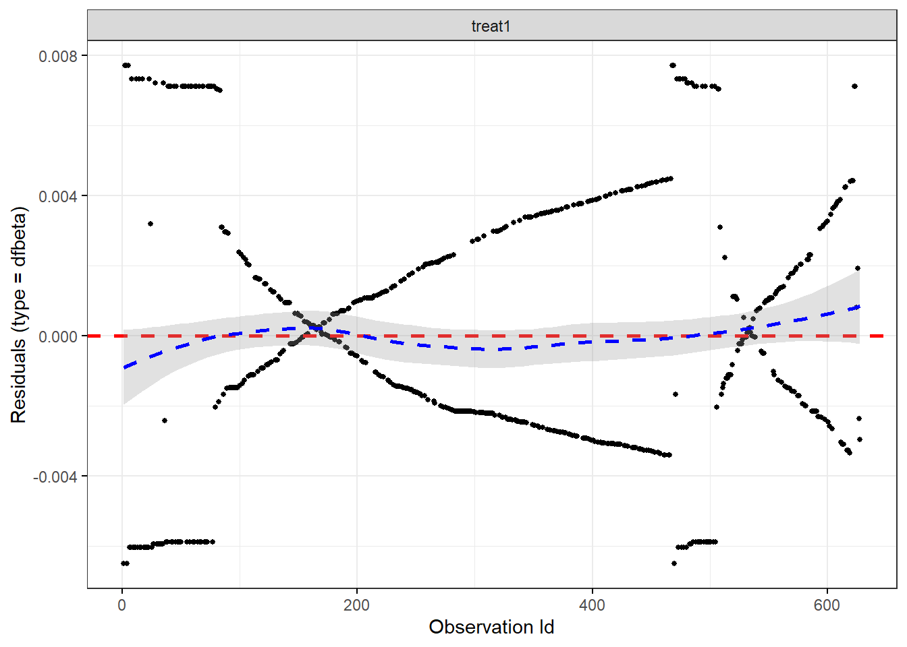
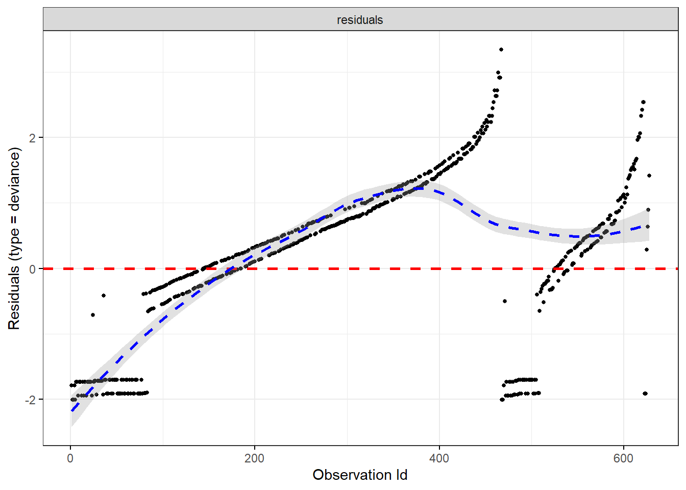
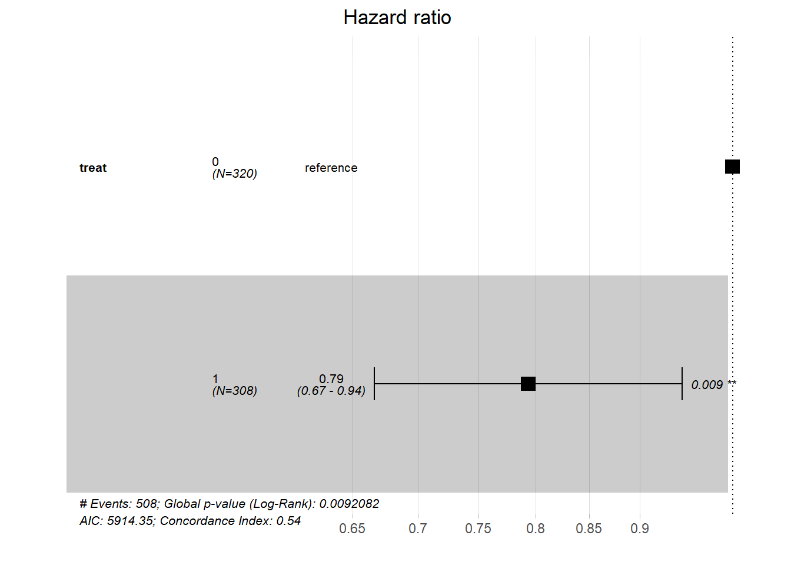
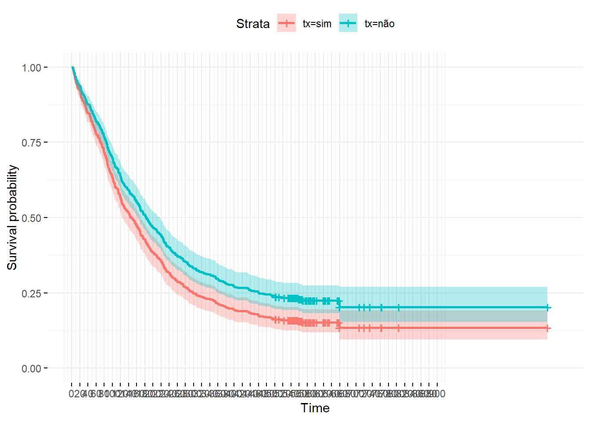
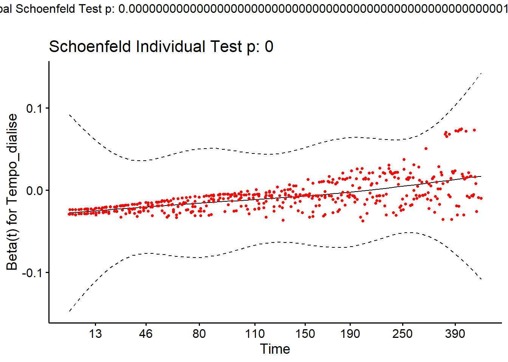
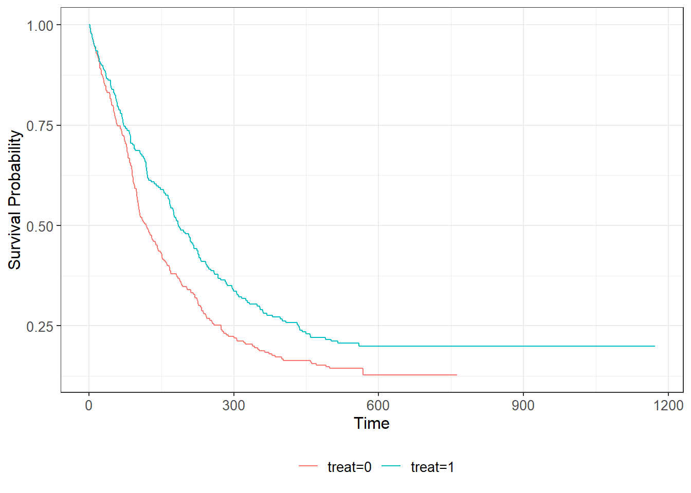
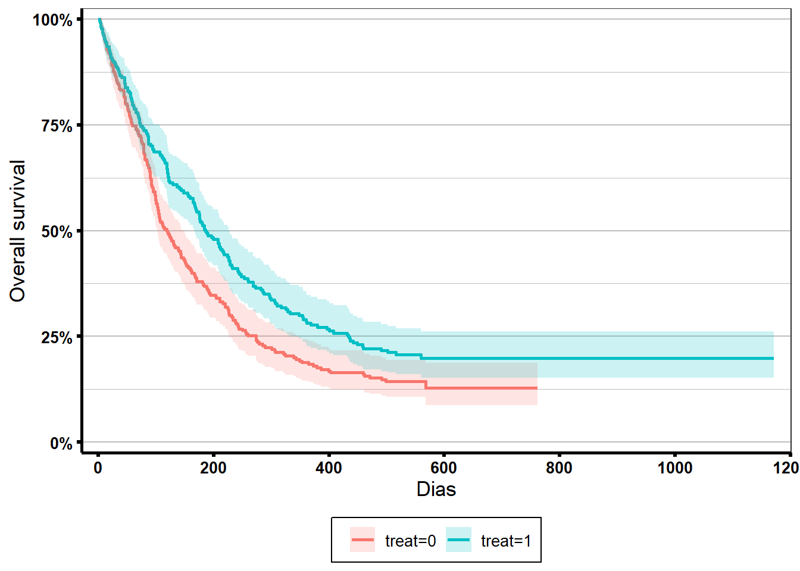
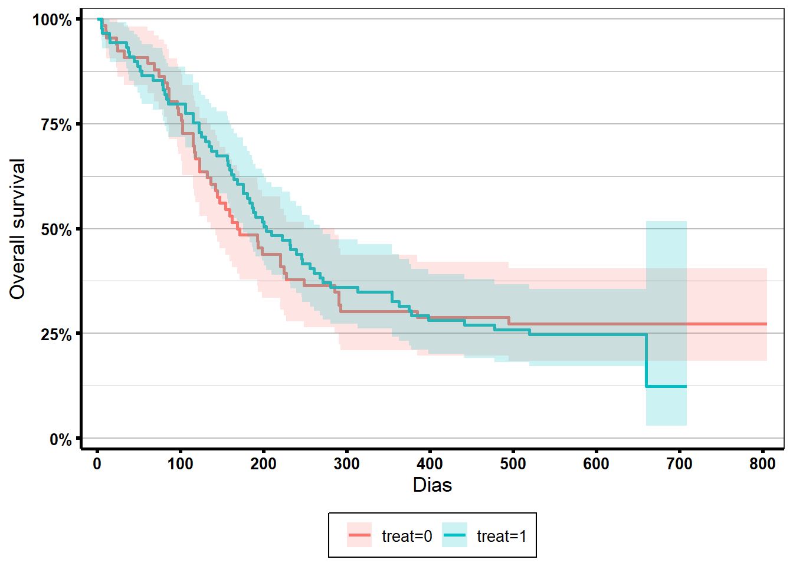
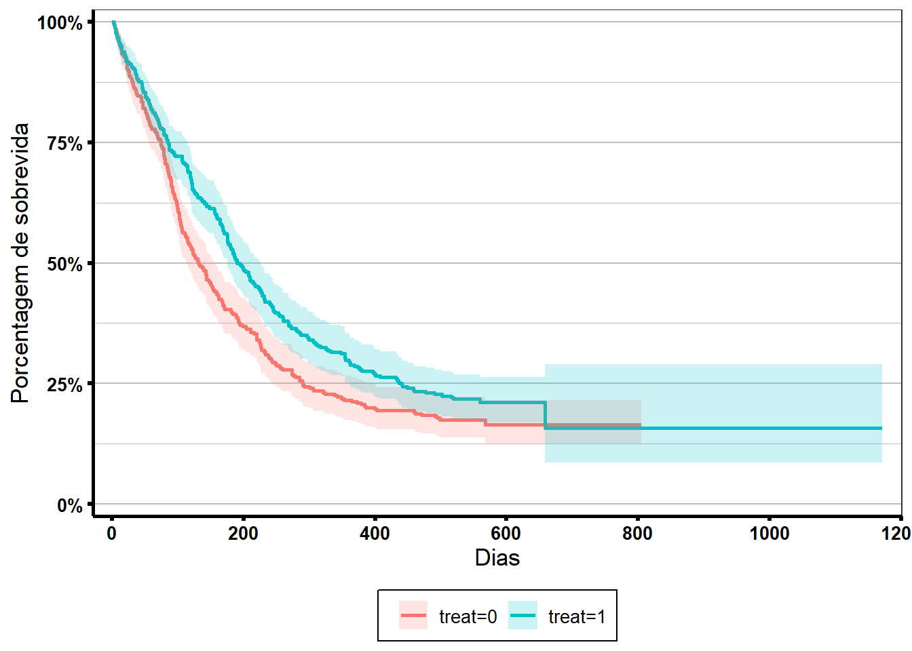
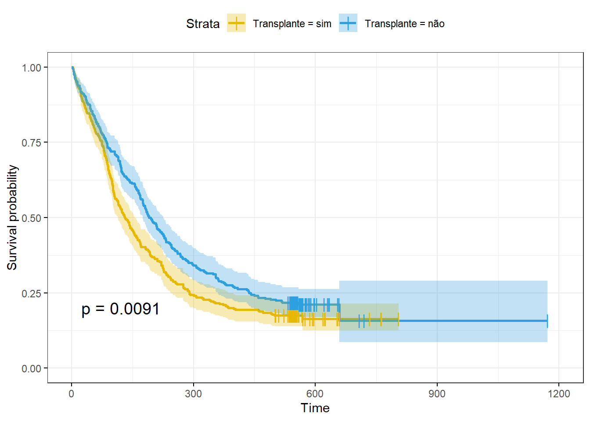

library(tidyverse)
library(flexplot)
library(foreign)
library(dplyr)
library(tm)
library(ggplot2)
library(forcats)
library(rempsyc)
library(easystats)
library(kableExtra)
library(gtsummary)
#Específicos para survival
library(survival)
library(ggsurvfit)
library(survminer)
library(broom)
library(survMisc)
library(PHInfiniteEstimates)
library(coin)
library(condSURV)7 Lista 6.1 - Cox tempo dependente
O banco de dados Cox_tempo_dependente1.sav apresenta os dados de 628 pacientes de um serviço de nefrologia. Os pacientes foram acompanhados por pouco mais de 1000 dias e durante este período alguns pacientes fizeram transplante renal (treat=1). Gostariamos de saber se a realização de transplante aumenta significativamente a sobrevida destes pacientes em relação àqueles que não fizeram. Com base nestas informações, responda as questões abaixo
7.1 Carregando pacotes
7.2 Carregando os dados e modificando o tipo de variável
Mantendo as boas práticas das análises, logo após carregar os dados em uma variável, vamos verificar os tipos de variávels que temos em nosso banco.
original = read.spss("Cox tempo dependente 2_1.sav", to.data.frame=TRUE)
glimpse(original)Rows: 628
Columns: 7
$ ID <dbl> 112, 91, 113, 150, 22, 139, 104, 590, 189, 171, 338, 492…
$ age <dbl> 35, 33, 35, 31, 33, 43, 25, 35, 29, 27, 35, 23, 24, 23, …
$ race <fct> branco, branco, branco, branco, branco, branco, branco, …
$ treat <dbl> 1, 0, 0, 1, 0, 1, 1, 0, 1, 1, 1, 0, 1, 0, 1, 1, 0, 1, 1,…
$ Tempo_dialise <dbl> 51, 67, 88, 156, 12, 139, 90, 25, 187, 34, 29, 78, 63, 8…
$ time <dbl> 1172, 762, 734, 720, 659, 658, 655, 654, 634, 630, 621, …
$ morte <fct> Não, Não, Não, Não, Não, Não, Não, Não, Não, Não, Não, N…Novamente podemos observar que o evento de interesse (morte) está como um fator. Vamos modificar como já fizemos a lista 6 e também já vamos ajustar a variável “treat” para que ela seja um fator e não um número.
db <- original %>%
mutate(
morte = as.integer(morte == "Sim"), # para transformar sim e não em 1 e 0, respectivamente
treat = as.factor(treat)
)
glimpse(db)Rows: 628
Columns: 7
$ ID <dbl> 112, 91, 113, 150, 22, 139, 104, 590, 189, 171, 338, 492…
$ age <dbl> 35, 33, 35, 31, 33, 43, 25, 35, 29, 27, 35, 23, 24, 23, …
$ race <fct> branco, branco, branco, branco, branco, branco, branco, …
$ treat <fct> 1, 0, 0, 1, 0, 1, 1, 0, 1, 1, 1, 0, 1, 0, 1, 1, 0, 1, 1,…
$ Tempo_dialise <dbl> 51, 67, 88, 156, 12, 139, 90, 25, 187, 34, 29, 78, 63, 8…
$ time <dbl> 1172, 762, 734, 720, 659, 658, 655, 654, 634, 630, 621, …
$ morte <int> 0, 0, 0, 0, 0, 0, 0, 0, 0, 0, 0, 0, 0, 0, 0, 0, 0, 0, 0,…Feito! Vamos também verificar se há presença de dados faltantes e em quais variáveis.
# Verificando NAs
resumo_nas <- db %>%
summarise(
nas_age = sum(is.na(age)),
nas_race = sum(is.na(race)),
nas_treat = sum(is.na(treat)),
nas_t_dialise = sum(is.na(Tempo_dialise)),
nas_time = sum(is.na(time)),
nas_morte = sum(is.na(morte)),
)
kable(resumo_nas)| nas_age | nas_race | nas_treat | nas_t_dialise | nas_time | nas_morte |
|---|---|---|---|---|---|
| 5 | 6 | 0 | 0 | 0 | 0 |
Até chegar na Cox tempo dependente, vamos repetir basicamente o que já fizemos no Capítulo 6
7.3 Criando a estrutura de dados
# Create a survival object
surv_obj <- Surv(time = db$time, event = db$morte)Tábua de vida
# Create survival curve
fit1 <- survfit(surv_obj ~ treat, data = db)
kable(head(tidy(fit1)))| time | n.risk | n.event | n.censor | estimate | std.error | conf.high | conf.low | strata |
|---|---|---|---|---|---|---|---|---|
| 3 | 320 | 2 | 0 | 0.993750 | 0.0044333 | 1.0000000 | 0.9851526 | treat=0 |
| 4 | 318 | 2 | 0 | 0.987500 | 0.0062894 | 0.9997483 | 0.9754017 | treat=0 |
| 5 | 316 | 1 | 0 | 0.984375 | 0.0070430 | 0.9980575 | 0.9708801 | treat=0 |
| 6 | 315 | 2 | 0 | 0.978125 | 0.0083599 | 0.9942837 | 0.9622289 | treat=0 |
| 7 | 313 | 2 | 0 | 0.971875 | 0.0095097 | 0.9901593 | 0.9539283 | treat=0 |
| 8 | 311 | 1 | 0 | 0.968750 | 0.0100402 | 0.9880024 | 0.9498728 | treat=0 |
Gráfico Kaplan-Meir
km_plot = survfit2(surv_obj ~ treat, data = db) %>%
tidy_survfit() %>%
ggplot(aes(x = time, y = estimate,
min = conf.low, ymax = conf.low,
color = strata, fill = strata)) +
geom_step()
km_plot
Podemos ajustar as configurações do eixo X para exibir uma escala temporal com intervalos de 50 unidades.
# km_plot2 = fit1 %>%
# tidy_survfit() %>%
# ggplot(aes(x = time, y = estimate,
# min = conf.low, ymax = conf.low,
# color = strata, fill = strata)) +
# geom_step()
km_plot2 = fit1 %>%
tidy_survfit() %>%
ggplot(aes(x = time, y = estimate,
min = conf.low, ymax = conf.low,
color = strata, fill = strata)) +
geom_step() +
scale_x_continuous(breaks = seq(0, max(fit1$time), by = 50))
km_plot2
Tabela com Sobrevida em tempos espcíficos.
tbl_survfit_ex3 <-
list(
survfit(surv_obj ~ 1, db),
survfit(surv_obj ~ treat, db)
) %>%
tbl_survfit(times = c(100, 600))
tbl_survfit_ex3| Characteristic | Time 100 | Time 600 |
|---|---|---|
| Overall | 66% (63%, 70%) | 19% (16%, 22%) |
| treat | ||
| 0 | 61% (56%, 66%) | 16% (13%, 21%) |
| 1 | 72% (67%, 77%) | 21% (17%, 26%) |
Log-rank
coin::logrank_test(surv_obj ~ treat, data = db, type = "logrank" ) # padrão é o log-rank
Asymptotic Two-Sample Logrank Test
data: surv_obj by treat (0, 1)
Z = -2.5984, p-value = 0.009365
alternative hypothesis: true theta is not equal to 1Gehan-Breslow
coin::logrank_test(surv_obj ~ treat ,data = db, type = "Gehan-Breslow")
Asymptotic Two-Sample Gehan-Breslow Test
data: surv_obj by treat (0, 1)
Z = -3.0713, p-value = 0.002132
alternative hypothesis: true theta is not equal to 1Tarone-Ware
coin::logrank_test(surv_obj ~ treat ,data = db, type = "Tarone-Ware")
Asymptotic Two-Sample Tarone-Ware Test
data: surv_obj by treat (0, 1)
Z = -2.9622, p-value = 0.003055
alternative hypothesis: true theta is not equal to 1Peto-Peto
coin::logrank_test(surv_obj ~ treat ,data = db, type = "Peto-Peto")
Asymptotic Two-Sample Peto-Peto Test
data: surv_obj by treat (0, 1)
Z = -3.0608, p-value = 0.002207
alternative hypothesis: true theta is not equal to 17.4 Cox regression
# Cox regression ======================================================
# Fit the model
cox_res <- coxph(Surv(time = db$time, event = db$morte) ~ treat, data = db)
### Para testar todas as variáveis
#cox_res <- coxph(Surv(time = db$time, event = db$morte2) ~ treat + age + Tempo_dialise, data = db)
tbl_regression(cox_res, exponentiate = TRUE)| Characteristic | HR1 | 95% CI1 | p-value |
|---|---|---|---|
| treat | |||
| 0 | — | — | |
| 1 | 0.79 | 0.67, 0.94 | 0.009 |
| 1 HR = Hazard Ratio, CI = Confidence Interval | |||
Verificando os pressupostos da Cox regression
Relembrando a análise dos riscos proporcionais com base nos resíduos de Schoenfeld:
p-val < 0,05: há evidências contra a pressuposto de riscos proporcionais, os HRs não são constantes ao longo do tempo
chisq: quanto maior o valor, mais forte a violação dos pressupostos
7.5 Plot dos resíduos de Schoenfeld
# Plot the Schoenfeld residuals over time for each covariate
survminer::ggcoxzph(cox.zph(cox_res), point.size = 0.1)
Se os resíduos mostrarem um padrão claro ao longo do tempo, isso pode indicar uma violação da suposição de riscos proporcionais.
Algumas dicas para ajudar na interpretação:
Sem Padrão (Resíduos Constantes): Se os resíduos aparecerem aleatoriamente espalhados em torno de zero, sem nenhuma tendência ou padrão claro, isso sugere que a suposição de riscos proporcionais é razoável.
Tendência Linear: Uma tendência linear (aumentando ou diminuindo) nos resíduos ao longo do tempo pode sugerir uma violação da suposição de riscos proporcionais. Por exemplo, se os resíduos forem consistentemente positivos ou negativos ao longo do tempo, isso indica um efeito dependente do tempo.
Padrão Não Linear: Se os resíduos exibirem um padrão não linear ou formatos específicos (por exemplo, formato de U, formato de V), isso pode indicar desvios dos riscos proporcionais.
Paralelismo: Paralelismo significa que a propagação e distribuição dos resíduos são relativamente constantes ao longo do tempo. Se os resíduos aumentarem ou diminuirem ao longo do tempo, isso pode sugerir uma violação da suposição.
ggcoxdiagnostics(cox_res, type = "dfbeta", linear.predictions = FALSE)Warning: `gather_()` was deprecated in tidyr 1.2.0.
ℹ Please use `gather()` instead.
ℹ The deprecated feature was likely used in the survminer package.
Please report the issue at <https://github.com/kassambara/survminer/issues>.`geom_smooth()` using formula = 'y ~ x'
# Não é importante para variáveis categóricas, mas fica o código para eventual consulta.
ggcoxdiagnostics(cox_res, type = "deviance", linear.predictions = FALSE)`geom_smooth()` using formula = 'y ~ x'
7.6 Plots do modelo
Forest plot
# Forest plots ================================================================
# Visualise your Cox model results
ggforest(cox_res, data = db)
Gráfico de sobrevida
Assim como fizemos no exercício anterior, precisamos criar um novo banco de dados para visualizar o gráfico da Regressão de Cox:
# Precisa ser feito apenas com uma variável
cox_res2 <- coxph(Surv(time = db$time, event = db$morte) ~ treat, data = db)
# Criando o novo banco de dados
new_df <- with(db,
data.frame(treat = c("0", "1"))
)E precisamos transformar a variável treat em um fator.
new_df$treat = as.factor(new_df$treat)
kable(new_df)| treat |
|---|
| 0 |
| 1 |
Criando os dados com base no modelo e plotando o gráfico.
fit_cox <- survfit(cox_res2, newdata = new_df)
J = ggsurvplot(fit_cox, conf.int = TRUE, legend.labs=c("tx=sim", "tx=não"),
ggtheme = theme_minimal(),
data = db)
J$plot = J$plot +
scale_x_continuous(breaks = seq(0, 900, 20))Scale for x is already present.
Adding another scale for x, which will replace the existing scale.J
Reparem na distorção do gráfico em relação à Kaplan-Meir
km_plot
7.7 Cox tempo-dependente
Já vimos que os riscos não são proporcionais neste caso. Porém, nem tudo está perdido. Podemos finalmente agora falar da Cox Tempo-dependente.
O primeiro passo é identificar um possível fator que esteja afetando a proporcionalidade dos riscos no estudo. Pela literatura tempos que o tempo em diálise afeta os riscos entre pessoas que fizeram ou não o transplante de rim. Daí a importância de entender bem o fenômeno que estamos estudando. Como bons pesquisadores, também coletamos o tempo em diálise e esses dados estão no banco de dados
glimpse(db$Tempo_dialise) num [1:628] 51 67 88 156 12 139 90 25 187 34 ...A variável é numérica e contínua, logo ela já está formatada para continuarmos com a análise.
Não existe regras escritas na pedra para contornar o problema de não proporcionalidade. Vamos mostrar uma abordagem aqui. Não deixe de ver as referências para outros casos.
Covariáveis tempo dependente
No R, há diversas formas de indicar uma variável como tempo-dependente. A escolha do método dependerá da natureza da variável independente e da sua relação teórica com o evento em estudo. A função coxph() oferece a opção de utilizar o argumento tt(), o qual especifica qual variável independente será considerada uma covariável tempo-dependente e como o coeficiente associado a ela deve ser modificado ao longo do tempo.
O modelo deve seguir a seguinte estrutura
coxph(Surv(time, event) ~ covariavel1 + covariavel2 + tt(covariavel2), data, tt=function(x,t,…) x*t)
Podemos substituir o Surv(time, event) pela variável que salvamos com o objeto survival, surv_obj.
A função tt (function(x,t,…)___) pode assumir alguns modelos. A seguir trazemos três exemplos mais utilizados em diversas análises:
x*t permitirá que o coeficiente mude linearmente com o tempo
x*log(t) permite que o coeficiente mude com o log do tempo
x*(t>tempo) permite que o coeficiente assuma 2 valores diferentes, um valor quando t<=tempo e outro valor t>tempo
Vamos gerar vários modelos e avaliá-los comparando os índices de ajuste e os resultados obtidos.
Sem variável tempo dependente
dialise <- coxph(surv_obj ~ treat + Tempo_dialise,
data=db) # corte no 660
summary(dialise)Call:
coxph(formula = surv_obj ~ treat + Tempo_dialise, data = db)
n= 628, number of events= 508
coef exp(coef) se(coef) z Pr(>|z|)
treat1 0.0618983 1.0638541 0.0899990 0.688 0.492
Tempo_dialise -0.0084493 0.9915863 0.0007709 -10.960 <0.0000000000000002 ***
---
Signif. codes: 0 '***' 0.001 '**' 0.01 '*' 0.05 '.' 0.1 ' ' 1
exp(coef) exp(-coef) lower .95 upper .95
treat1 1.0639 0.940 0.8918 1.2691
Tempo_dialise 0.9916 1.008 0.9901 0.9931
Concordance= 0.75 (se = 0.012 )
Likelihood ratio test= 151.4 on 2 df, p=<0.0000000000000002
Wald test = 121.2 on 2 df, p=<0.0000000000000002
Score (logrank) test = 120.6 on 2 df, p=<0.0000000000000002Mudança linear
dialise_linear <- coxph(surv_obj ~ treat + Tempo_dialise + tt(Tempo_dialise),
data=db,
tt=function(x,t,...) x*t)
summary(dialise_linear)Call:
coxph(formula = surv_obj ~ treat + Tempo_dialise + tt(Tempo_dialise),
data = db, tt = function(x, t, ...) x * t)
n= 628, number of events= 508
coef exp(coef) se(coef) z
treat1 -0.016001236 0.984126103 0.091676088 -0.175
Tempo_dialise -0.023777102 0.976503346 0.001506128 -15.787
tt(Tempo_dialise) 0.000070699 1.000070701 0.000005184 13.637
Pr(>|z|)
treat1 0.861
Tempo_dialise <0.0000000000000002 ***
tt(Tempo_dialise) <0.0000000000000002 ***
---
Signif. codes: 0 '***' 0.001 '**' 0.01 '*' 0.05 '.' 0.1 ' ' 1
exp(coef) exp(-coef) lower .95 upper .95
treat1 0.9841 1.0161 0.8223 1.1778
Tempo_dialise 0.9765 1.0241 0.9736 0.9794
tt(Tempo_dialise) 1.0001 0.9999 1.0001 1.0001
Concordance= 0.761 (se = 0.009 )
Likelihood ratio test= 337.6 on 3 df, p=<0.0000000000000002
Wald test = 249.3 on 3 df, p=<0.0000000000000002
Score (logrank) test = 229.1 on 3 df, p=<0.0000000000000002Modelo log
dialise_log <- coxph(surv_obj ~ treat + Tempo_dialise + tt(Tempo_dialise),
data=db,
tt=function(x,t,...) x*log(t))
summary(dialise_log)Call:
coxph(formula = surv_obj ~ treat + Tempo_dialise + tt(Tempo_dialise),
data = db, tt = function(x, t, ...) x * log(t))
n= 628, number of events= 508
coef exp(coef) se(coef) z Pr(>|z|)
treat1 -0.071106 0.931363 0.092369 -0.77 0.441
Tempo_dialise -0.097417 0.907178 0.005942 -16.40 <0.0000000000000002 ***
tt(Tempo_dialise) 0.017178 1.017326 0.001087 15.80 <0.0000000000000002 ***
---
Signif. codes: 0 '***' 0.001 '**' 0.01 '*' 0.05 '.' 0.1 ' ' 1
exp(coef) exp(-coef) lower .95 upper .95
treat1 0.9314 1.074 0.7771 1.1162
Tempo_dialise 0.9072 1.102 0.8967 0.9178
tt(Tempo_dialise) 1.0173 0.983 1.0152 1.0195
Concordance= 0.759 (se = 0.01 )
Likelihood ratio test= 461.5 on 3 df, p=<0.0000000000000002
Wald test = 284.6 on 3 df, p=<0.0000000000000002
Score (logrank) test = 223.9 on 3 df, p=<0.0000000000000002Modelo temporal
dialise_tempo_650 <- coxph(surv_obj ~ treat + Tempo_dialise + tt(Tempo_dialise),
data=db,
tt=function(x,t,...) x*(t>650))
summary(dialise_tempo_650)Call:
coxph(formula = surv_obj ~ treat + Tempo_dialise + tt(Tempo_dialise),
data = db, tt = function(x, t, ...) x * (t > 650))
n= 628, number of events= 508
coef exp(coef) se(coef) z Pr(>|z|)
treat1 0.0617615 1.0637086 0.0900051 0.686 0.493
Tempo_dialise -0.0084524 0.9915832 0.0007713 -10.958 <0.0000000000000002
tt(Tempo_dialise) 0.0028519 1.0028560 0.0221016 0.129 0.897
treat1
Tempo_dialise ***
tt(Tempo_dialise)
---
Signif. codes: 0 '***' 0.001 '**' 0.01 '*' 0.05 '.' 0.1 ' ' 1
exp(coef) exp(-coef) lower .95 upper .95
treat1 1.0637 0.9401 0.8917 1.2689
Tempo_dialise 0.9916 1.0085 0.9901 0.9931
tt(Tempo_dialise) 1.0029 0.9972 0.9603 1.0473
Concordance= 0.75 (se = 0.01 )
Likelihood ratio test= 151.5 on 3 df, p=<0.0000000000000002
Wald test = 121.2 on 3 df, p=<0.0000000000000002
Score (logrank) test = 120.6 on 3 df, p=<0.0000000000000002Índices de aderência (AIC e BIC)
Podemos comparar os modelos computando os valores de AIC e BIC
combined_df <- data.frame(
Model = c("dialise", "dialise_linear", "dialise_log", "dialise_tempo_650"),
AIC = c(AIC(dialise), AIC(dialise_linear), AIC(dialise_log), AIC(dialise_tempo_650)),
BIC = c(BIC(dialise), BIC(dialise_linear), BIC(dialise_log), BIC(dialise_tempo_650))
)
kable(combined_df)| Model | AIC | BIC |
|---|---|---|
| dialise | 5771.688 | 5780.149 |
| dialise_linear | 5587.564 | 5600.256 |
| dialise_log | 5463.651 | 5476.343 |
| dialise_tempo_650 | 5773.672 | 5786.363 |
Por esse critério, temos que o melhor modelo é o log em seguida o linear.
Resíduos de Schoenfeld
Agora vamos analisar mais uma vez os resíduos de Schoenfeld, mas agora variando pelo “Tempo em Diálise”.
cox_res_T_Cov <- coxph(Surv(time = db$time, event = db$morte) ~ treat + Tempo_dialise, data = db)
ggcoxzph(cox.zph(cox_res_T_Cov), var ="Tempo_dialise") 
Podemos observar que o Beta do tempo em diálise tem um aumento linear conforme maior o tempo. O resultado pode indicar que o efeito do tempo sobre a o tempo em diálise pode ser linear.
Interpretando os resultados.
A interpretação dos coeficientes da Cox Tempo-dependente é diferente das outras regressõs.
Vamos interpretar o valor do modelo com mudança linear.
summary(dialise_linear)Call:
coxph(formula = surv_obj ~ treat + Tempo_dialise + tt(Tempo_dialise),
data = db, tt = function(x, t, ...) x * t)
n= 628, number of events= 508
coef exp(coef) se(coef) z
treat1 -0.016001236 0.984126103 0.091676088 -0.175
Tempo_dialise -0.023777102 0.976503346 0.001506128 -15.787
tt(Tempo_dialise) 0.000070699 1.000070701 0.000005184 13.637
Pr(>|z|)
treat1 0.861
Tempo_dialise <0.0000000000000002 ***
tt(Tempo_dialise) <0.0000000000000002 ***
---
Signif. codes: 0 '***' 0.001 '**' 0.01 '*' 0.05 '.' 0.1 ' ' 1
exp(coef) exp(-coef) lower .95 upper .95
treat1 0.9841 1.0161 0.8223 1.1778
Tempo_dialise 0.9765 1.0241 0.9736 0.9794
tt(Tempo_dialise) 1.0001 0.9999 1.0001 1.0001
Concordance= 0.761 (se = 0.009 )
Likelihood ratio test= 337.6 on 3 df, p=<0.0000000000000002
Wald test = 249.3 on 3 df, p=<0.0000000000000002
Score (logrank) test = 229.1 on 3 df, p=<0.0000000000000002O coeficiente Tempo_dialise = -0.023, deve ser interpretado como o efeito do tempo de diálise no tempo zero. Já o coeficiente tt(Tempo_dialise) = deve ser interpretado como o a mudança do efeito do tempo em diálise a cada unidade de tempo a mais.
Observações SPSS e R
Na aula prática o modelo não é feito com o Tempo em Diálise fora da variável tempo dependente. Já na aula teórica do curso II de 2023, o modelo é escrito como foi feito aqui no R, levando em conta o Tempo em Diálise como uma variável tempo dependente e também como covariável no modelo.
7.8 Covariando para idade e raça
O conjunto de dados ainda possui duas variáveis que não foram incluídas no modelo: idade e raça. Conforme o procedimento padrão, vamos examinar a natureza dessas variáveis. Começando com a idade.
glimpse(db)Rows: 628
Columns: 7
$ ID <dbl> 112, 91, 113, 150, 22, 139, 104, 590, 189, 171, 338, 492…
$ age <dbl> 35, 33, 35, 31, 33, 43, 25, 35, 29, 27, 35, 23, 24, 23, …
$ race <fct> branco, branco, branco, branco, branco, branco, branco, …
$ treat <fct> 1, 0, 0, 1, 0, 1, 1, 0, 1, 1, 1, 0, 1, 0, 1, 1, 0, 1, 1,…
$ Tempo_dialise <dbl> 51, 67, 88, 156, 12, 139, 90, 25, 187, 34, 29, 78, 63, 8…
$ time <dbl> 1172, 762, 734, 720, 659, 658, 655, 654, 634, 630, 621, …
$ morte <int> 0, 0, 0, 0, 0, 0, 0, 0, 0, 0, 0, 0, 0, 0, 0, 0, 0, 0, 0,…Ótimo, idade já está como uma variável numérica e contínua e raça está como um fator. Por fim, vamos verificar qual o nível de referência da variável “race”.
levels(db$race)[1] "branco" "negro/pardo"O nível “branco” está como referência, logo, os resultados do modelo mostrarão os valores dos coeficientes do nível “negro/pardo” em relação ao nível “branco”.
Vamos ao modelo completo.
Modelo completo Cox tempo dependente
cox_full_model <- coxph(surv_obj ~ age + race + treat + Tempo_dialise + tt(Tempo_dialise),
data=db,
tt=function(x,t,...) x*t)
summary(cox_full_model)Call:
coxph(formula = surv_obj ~ age + race + treat + Tempo_dialise +
tt(Tempo_dialise), data = db, tt = function(x, t, ...) x *
t)
n= 617, number of events= 500
(11 observations deleted due to missingness)
coef exp(coef) se(coef) z
age -0.005531327 0.994483942 0.007272881 -0.761
racenegro/pardo -0.342009991 0.710341107 0.108147939 -3.162
treat1 0.042207387 1.043110784 0.093368582 0.452
Tempo_dialise -0.023671737 0.976606241 0.001511519 -15.661
tt(Tempo_dialise) 0.000068807 1.000068809 0.000005196 13.242
Pr(>|z|)
age 0.44693
racenegro/pardo 0.00156 **
treat1 0.65123
Tempo_dialise < 0.0000000000000002 ***
tt(Tempo_dialise) < 0.0000000000000002 ***
---
Signif. codes: 0 '***' 0.001 '**' 0.01 '*' 0.05 '.' 0.1 ' ' 1
exp(coef) exp(-coef) lower .95 upper .95
age 0.9945 1.0055 0.9804 1.0088
racenegro/pardo 0.7103 1.4078 0.5747 0.8781
treat1 1.0431 0.9587 0.8687 1.2526
Tempo_dialise 0.9766 1.0240 0.9737 0.9795
tt(Tempo_dialise) 1.0001 0.9999 1.0001 1.0001
Concordance= 0.765 (se = 0.009 )
Likelihood ratio test= 343.2 on 5 df, p=<0.0000000000000002
Wald test = 259.4 on 5 df, p=<0.0000000000000002
Score (logrank) test = 243.3 on 5 df, p=<0.0000000000000002Agora temos que a raça tem um efeito significativo no modelo. Seguindo o vídeo da aula prática, podemos segmentar o banco de dados para as duas raças que temos no banco de dados.
Segmentando o banco de dados por raça
db_branco = db %>%
filter(race == "branco")
db_pardo_negro = db %>%
filter(race == "negro/pardo")KM por raça = Branco
# Criando um novo objeto Surv
surv_obj_branco <- Surv(time = db_branco$time, event = db_branco$morte)
fit_br = survfit(surv_obj_branco ~ treat, data = db_branco)
ggsurvfit(fit_br)
ggsurvfit(fit_br, linewidth = 1) +
labs(x = 'Dias', y = 'Overall survival') +
add_confidence_interval() +
# add_risktable() +
scale_ggsurvfit() +
biostatsquid_theme #+ coord_cartesian(xlim = c(0, 8))
Modelo completo para brancos
# Escrevendo o modelo
cox_full_model_branco <- coxph(surv_obj_branco ~ age + treat + Tempo_dialise + tt(Tempo_dialise),
data=db_branco,
tt=function(x,t,...) x*t)
summary(cox_full_model_branco)Call:
coxph(formula = surv_obj_branco ~ age + treat + Tempo_dialise +
tt(Tempo_dialise), data = db_branco, tt = function(x, t,
...) x * t)
n= 464, number of events= 385
(3 observations deleted due to missingness)
coef exp(coef) se(coef) z
age -0.000811624 0.999188705 0.008137628 -0.10
treat1 0.028995294 1.029419750 0.107276897 0.27
Tempo_dialise -0.024166842 0.976122838 0.001707544 -14.15
tt(Tempo_dialise) 0.000070240 1.000070242 0.000005841 12.03
Pr(>|z|)
age 0.921
treat1 0.787
Tempo_dialise <0.0000000000000002 ***
tt(Tempo_dialise) <0.0000000000000002 ***
---
Signif. codes: 0 '***' 0.001 '**' 0.01 '*' 0.05 '.' 0.1 ' ' 1
exp(coef) exp(-coef) lower .95 upper .95
age 0.9992 1.0008 0.9834 1.0153
treat1 1.0294 0.9714 0.8342 1.2703
Tempo_dialise 0.9761 1.0245 0.9729 0.9794
tt(Tempo_dialise) 1.0001 0.9999 1.0001 1.0001
Concordance= 0.78 (se = 0.01 )
Likelihood ratio test= 286.5 on 4 df, p=<0.0000000000000002
Wald test = 201.8 on 4 df, p=<0.0000000000000002
Score (logrank) test = 185.6 on 4 df, p=<0.0000000000000002KM por raça = negro/pardo
# Criando um novo objeto Surv
surv_obj_pardo_negro<- Surv(time = db_pardo_negro$time, event = db_pardo_negro$morte)
fit_pn = survfit(surv_obj_pardo_negro ~ treat, data = db_pardo_negro)
ggsurvfit(fit_pn, linewidth = 1) +
labs(x = 'Dias', y = 'Overall survival') +
add_confidence_interval() +
# add_risktable() +
scale_ggsurvfit() +
biostatsquid_theme #+ coord_cartesian(xlim = c(0, 8))
Modelo completo para pardo/negro
# Escrevendo o modelo
cox_full_model_pardo_negro <- coxph(surv_obj_pardo_negro ~ age + treat + Tempo_dialise + tt(Tempo_dialise),
data=db_pardo_negro,
tt=function(x,t,...) x*t)
summary(cox_full_model_pardo_negro)Call:
coxph(formula = surv_obj_pardo_negro ~ age + treat + Tempo_dialise +
tt(Tempo_dialise), data = db_pardo_negro, tt = function(x,
t, ...) x * t)
n= 153, number of events= 115
(2 observations deleted due to missingness)
coef exp(coef) se(coef) z Pr(>|z|)
age -0.02336224 0.97690855 0.01673857 -1.396 0.163
treat1 0.07806397 1.08119182 0.19431411 0.402 0.688
Tempo_dialise -0.02367178 0.97660620 0.00397339 -5.958 0.00000000256 ***
tt(Tempo_dialise) 0.00007639 1.00007639 0.00001784 4.282 0.00001853157 ***
---
Signif. codes: 0 '***' 0.001 '**' 0.01 '*' 0.05 '.' 0.1 ' ' 1
exp(coef) exp(-coef) lower .95 upper .95
age 0.9769 1.0236 0.9454 1.0095
treat1 1.0812 0.9249 0.7388 1.5824
Tempo_dialise 0.9766 1.0240 0.9690 0.9842
tt(Tempo_dialise) 1.0001 0.9999 1.0000 1.0001
Concordance= 0.696 (se = 0.025 )
Likelihood ratio test= 48.53 on 4 df, p=0.0000000007
Wald test = 39.77 on 4 df, p=0.00000005
Score (logrank) test = 42.56 on 4 df, p=0.000000017.9 Lista 6.1 resolvida no SPSS
7.10 Extras
Mais gráficos
E utilizar nosso tema para personalizar e padronizar.
fit2_km <- ggsurvfit(fit1, linewidth = 1) +
labs(x = 'Dias', y = 'Porcentagem de sobrevida') +
add_confidence_interval() +
# add_risktable() +
scale_ggsurvfit() +
biostatsquid_theme #+ coord_cartesian(xlim = c(0, 8))
fit2_km
Cuidado com o p-value do gráfico a seguir, ele se refere apenas ao Log-rank
ggsurvplot(fit1, data = db,
size = 1,
palette = c('#E7B800', '#2e9fdf'),
censor.shape = '|', censor.size = 4,
conf.int = TRUE,
pval = TRUE, # CUIDADO, apenas log-rank
# risk.table = TRUE,
# risk.table.col = 'strata',
legend.labs = list('0' = 'Transplante = sim', '1' = 'Transplante = não'),
risk.table.height = 0.25,
ggtheme = theme_bw())
Cox tempo dependente log
cox_full_model_2 <- coxph(surv_obj ~ age + race + treat + Tempo_dialise + tt(Tempo_dialise),
data=db,
tt=function(x,t,...) x*log(t))
summary(cox_full_model_2)Call:
coxph(formula = surv_obj ~ age + race + treat + Tempo_dialise +
tt(Tempo_dialise), data = db, tt = function(x, t, ...) x *
log(t))
n= 617, number of events= 500
(11 observations deleted due to missingness)
coef exp(coef) se(coef) z Pr(>|z|)
age -0.005656 0.994360 0.007318 -0.773 0.43960
racenegro/pardo -0.296846 0.743159 0.108704 -2.731 0.00632
treat1 -0.007682 0.992348 0.094183 -0.082 0.93499
Tempo_dialise -0.096272 0.908217 0.005996 -16.056 < 0.0000000000000002
tt(Tempo_dialise) 0.016885 1.017028 0.001098 15.383 < 0.0000000000000002
age
racenegro/pardo **
treat1
Tempo_dialise ***
tt(Tempo_dialise) ***
---
Signif. codes: 0 '***' 0.001 '**' 0.01 '*' 0.05 '.' 0.1 ' ' 1
exp(coef) exp(-coef) lower .95 upper .95
age 0.9944 1.0057 0.9802 1.0087
racenegro/pardo 0.7432 1.3456 0.6006 0.9196
treat1 0.9923 1.0077 0.8251 1.1935
Tempo_dialise 0.9082 1.1011 0.8976 0.9190
tt(Tempo_dialise) 1.0170 0.9833 1.0148 1.0192
Concordance= 0.764 (se = 0.009 )
Likelihood ratio test= 459.7 on 5 df, p=<0.0000000000000002
Wald test = 290.9 on 5 df, p=<0.0000000000000002
Score (logrank) test = 237.8 on 5 df, p=<0.0000000000000002AIC(cox_full_model_2)[1] 5356.7247.11 Referencias
https://stats.oarc.ucla.edu/wp-content/uploads/2022/05/survival_r.html#(48)
7.12 Códigos não utilizados
# Ajustando o banco de dados
db3 = db
# db3$time = pmax(0.5, db3$time - 0) caso eu tenha zeros no tempo de morte
# db3$time660 = as.integer(db3$time660)
# head(db3)
# db3$time660 = as.integer(db3$time660)
db3 <- tmerge(
data1 = db3,
data2 = db3,
id = ID,
# death = event(T1, delta1), caso tenha dois eventos de morte independentes. Duas doenças diferentes, por exemplo
death = event(time, morte),
T_Cov = tdc(Tempo_dialise) # indicando a covariavel tempo-dependente
)
head(db3) ID age race treat Tempo_dialise time morte tstart tstop death T_Cov
1 112 35 branco 1 51 1172 0 0 51 0 0
2 112 35 branco 1 51 1172 0 51 1172 0 1
3 91 33 branco 0 67 762 0 0 67 0 0
4 91 33 branco 0 67 762 0 67 762 0 1
5 113 35 branco 0 88 734 0 0 88 0 0
6 113 35 branco 0 88 734 0 88 734 0 1# Duvida para Altay - colocar o evento como morte2 ou death
cox_model_T_Cov <- coxph(Surv(time = tstart, time2 = tstop, event = morte) ~ treat + T_Cov, data = db3)
summary(cox_model_T_Cov)Call:
coxph(formula = Surv(time = tstart, time2 = tstop, event = morte) ~
treat + T_Cov, data = db3)
n= 1174, number of events= 934
coef exp(coef) se(coef) z Pr(>|z|)
treat1 -0.17205 0.84194 0.06668 -2.580 0.00987 **
T_Cov 0.03829 1.03903 0.08493 0.451 0.65210
---
Signif. codes: 0 '***' 0.001 '**' 0.01 '*' 0.05 '.' 0.1 ' ' 1
exp(coef) exp(-coef) lower .95 upper .95
treat1 0.8419 1.1877 0.7388 0.9595
T_Cov 1.0390 0.9624 0.8797 1.2272
Concordance= 0.539 (se = 0.01 )
Likelihood ratio test= 7.53 on 2 df, p=0.02
Wald test = 7.53 on 2 df, p=0.02
Score (logrank) test = 7.54 on 2 df, p=0.02db3 %>%
coxph(Surv(time = tstart, time2 = tstop, event = death) ~ treat + age + race + T_Cov, data = .) %>%
gtsummary::tbl_regression(exp = TRUE)| Characteristic | HR1 | 95% CI1 | p-value |
|---|---|---|---|
| treat | |||
| 0 | — | — | |
| 1 | 1.05 | 0.88, 1.25 | 0.6 |
| age | 1.00 | 0.98, 1.01 | 0.5 |
| race | |||
| branco | — | — | |
| negro/pardo | 0.68 | 0.55, 0.84 | <0.001 |
| T_Cov | 13.6 | 10.1, 18.4 | <0.001 |
| 1 HR = Hazard Ratio, CI = Confidence Interval | |||
Tempo em diálise como covariante tempo-dependente
# Ajustando o banco de dados
db2 = db
#db2$time = pmax(0.5, db2$time - 0)
db2 <- tmerge(
data1 = db,
data2 = db,
id = ID,
# death = event(T1, delta1), caso tenha dois eventos de morte independentes. Duas doenças diferentes, por exemplo
death = event(time, morte),
T_Tempo_dialise = tdc(Tempo_dialise) # indicando a covariavel tempo-dependente
)
head(db2) ID age race treat Tempo_dialise time morte tstart tstop death
1 112 35 branco 1 51 1172 0 0 51 0
2 112 35 branco 1 51 1172 0 51 1172 0
3 91 33 branco 0 67 762 0 0 67 0
4 91 33 branco 0 67 762 0 67 762 0
5 113 35 branco 0 88 734 0 0 88 0
6 113 35 branco 0 88 734 0 88 734 0
T_Tempo_dialise
1 0
2 1
3 0
4 1
5 0
6 1cox_model_time_dependent <- coxph(Surv(time = tstart, time2 = tstop, event = death) ~ T_Tempo_dialise + treat, data = db2)
summary(cox_model_time_dependent)Call:
coxph(formula = Surv(time = tstart, time2 = tstop, event = death) ~
T_Tempo_dialise + treat, data = db2)
n= 1174, number of events= 508
coef exp(coef) se(coef) z Pr(>|z|)
T_Tempo_dialise 2.585761 13.273384 0.150925 17.133 <0.0000000000000002 ***
treat1 -0.003201 0.996804 0.089471 -0.036 0.971
---
Signif. codes: 0 '***' 0.001 '**' 0.01 '*' 0.05 '.' 0.1 ' ' 1
exp(coef) exp(-coef) lower .95 upper .95
T_Tempo_dialise 13.2734 0.07534 9.8745 17.842
treat1 0.9968 1.00321 0.8365 1.188
Concordance= 0.699 (se = 0.014 )
Likelihood ratio test= 382.7 on 2 df, p=<0.0000000000000002
Wald test = 294.6 on 2 df, p=<0.0000000000000002
Score (logrank) test = 354.7 on 2 df, p=<0.0000000000000002db2 %>%
coxph(Surv(time = tstart, time2 = tstop, event = death) ~ T_Tempo_dialise * treat, data = .) %>%
gtsummary::tbl_regression(exp = TRUE)| Characteristic | HR1 | 95% CI1 | p-value |
|---|---|---|---|
| T_Tempo_dialise | 9.78 | 6.78, 14.1 | <0.001 |
| treat | |||
| 0 | — | — | |
| 1 | 0.59 | 0.38, 0.92 | 0.020 |
| T_Tempo_dialise * treat | |||
| T_Tempo_dialise * 1 | 1.86 | 1.15, 3.02 | 0.012 |
| 1 HR = Hazard Ratio, CI = Confidence Interval | |||
7.13 Versões dos pacotes
report(sessionInfo())Analyses were conducted using the R Statistical language (version 4.3.1; R Core
Team, 2023) on Windows 11 x64 (build 22621), using the packages effectsize
(version 0.8.6; Ben-Shachar MS et al., 2020), lpSolve (version 5.6.19;
Berkelaar M, others, 2023), survMisc (version 0.5.6; Dardis C, 2022), tm
(version 0.7.11; Feinerer I, Hornik K, 2023), flexplot (version 0.20.5; Fife D,
2024), lubridate (version 1.9.3; Grolemund G, Wickham H, 2011), coxphf (version
1.13.4; Heinze G et al., 2023), NLP (version 0.2.1; Hornik K, 2020), coin
(version 1.4.3; Hothorn T et al., 2006), ggpubr (version 0.6.0; Kassambara A,
2023), survminer (version 0.4.9; Kassambara A et al., 2021),
PHInfiniteEstimates (version 2.9.5; Kolassa JE, Zhang J, 2023), parameters
(version 0.21.3; Lüdecke D et al., 2020), performance (version 0.10.8; Lüdecke
D et al., 2021), easystats (version 0.6.0; Lüdecke D et al., 2022), see
(version 0.8.1; Lüdecke D et al., 2021), insight (version 0.19.6; Lüdecke D et
al., 2019), bayestestR (version 0.13.1; Makowski D et al., 2019), modelbased
(version 0.8.6; Makowski D et al., 2020), report (version 0.5.7; Makowski D et
al., 2023), correlation (version 0.8.4; Makowski D et al., 2022), condSURV
(version 2.0.4; Meira-Machado L, Sestelo M, 2023), tibble (version 3.2.1;
Müller K, Wickham H, 2023), datawizard (version 0.9.0; Patil I et al., 2022),
foreign (version 0.8.85; R Core Team, 2023), nph (version 2.1; Ristl R et al.,
2021), broom (version 1.0.5; Robinson D et al., 2023), ggsurvfit (version
1.0.0; Sjoberg D et al., 2023), gtsummary (version 1.7.2; Sjoberg D et al.,
2021), rempsyc (version 0.1.6; Thériault R, 2023), survival (version 3.5.7;
Therneau T, 2023), ggplot2 (version 3.4.4; Wickham H, 2016), forcats (version
1.0.0; Wickham H, 2023), stringr (version 1.5.1; Wickham H, 2023), tidyverse
(version 2.0.0; Wickham H et al., 2019), dplyr (version 1.1.3; Wickham H et
al., 2023), purrr (version 1.0.2; Wickham H, Henry L, 2023), readr (version
2.1.4; Wickham H et al., 2023), tidyr (version 1.3.0; Wickham H et al., 2023)
and kableExtra (version 1.3.4; Zhu H, 2021).
References
----------
- Ben-Shachar MS, Lüdecke D, Makowski D (2020). "effectsize: Estimation of
Effect Size Indices and Standardized Parameters." _Journal of Open Source
Software_, *5*(56), 2815. doi:10.21105/joss.02815
<https://doi.org/10.21105/joss.02815>, <https://doi.org/10.21105/joss.02815>.
- Berkelaar M, others (2023). _lpSolve: Interface to 'Lp_solve' v. 5.5 to Solve
Linear/Integer Programs_. R package version 5.6.19,
<https://CRAN.R-project.org/package=lpSolve>.
- Dardis C (2022). _survMisc: Miscellaneous Functions for Survival Data_. R
package version 0.5.6, <https://CRAN.R-project.org/package=survMisc>.
- Feinerer I, Hornik K (2023). _tm: Text Mining Package_. R package version
0.7-11, <https://CRAN.R-project.org/package=tm>. Feinerer I, Hornik K, Meyer D
(2008). "Text Mining Infrastructure in R." _Journal of Statistical Software_,
*25*(5), 1-54. doi:10.18637/jss.v025.i05
<https://doi.org/10.18637/jss.v025.i05>.
- Fife D (2024). _flexplot: Graphically Based Data Analysis Using 'flexplot'_.
R package version 0.20.5.
- Grolemund G, Wickham H (2011). "Dates and Times Made Easy with lubridate."
_Journal of Statistical Software_, *40*(3), 1-25.
<https://www.jstatsoft.org/v40/i03/>.
- Heinze G, Ploner M, Jiricka L, Steiner G (2023). _coxphf: Cox Regression with
Firth's Penalized Likelihood_. R package version 1.13.4,
<https://CRAN.R-project.org/package=coxphf>.
- Hornik K (2020). _NLP: Natural Language Processing Infrastructure_. R package
version 0.2-1, <https://CRAN.R-project.org/package=NLP>.
- Hothorn T, Hornik K, van de Wiel MA, Zeileis A (2006). "A Lego system for
conditional inference." _The American Statistician_, *60*(3), 257-263.
doi:10.1198/000313006X118430 <https://doi.org/10.1198/000313006X118430>.
Hothorn T, Hornik K, van de Wiel MA, Zeileis A (2008). "Implementing a class of
permutation tests: The coin package." _Journal of Statistical Software_,
*28*(8), 1-23. doi:10.18637/jss.v028.i08
<https://doi.org/10.18637/jss.v028.i08>.
- Kassambara A (2023). _ggpubr: 'ggplot2' Based Publication Ready Plots_. R
package version 0.6.0, <https://CRAN.R-project.org/package=ggpubr>.
- Kassambara A, Kosinski M, Biecek P (2021). _survminer: Drawing Survival
Curves using 'ggplot2'_. R package version 0.4.9,
<https://CRAN.R-project.org/package=survminer>.
- Kolassa JE, Zhang J (2023). _PHInfiniteEstimates: Tools for Inference in the
Presence of a Monotone Likelihood_. R package version 2.9.5,
<https://CRAN.R-project.org/package=PHInfiniteEstimates>.
- Lüdecke D, Ben-Shachar M, Patil I, Makowski D (2020). "Extracting, Computing
and Exploring the Parameters of Statistical Models using R." _Journal of Open
Source Software_, *5*(53), 2445. doi:10.21105/joss.02445
<https://doi.org/10.21105/joss.02445>.
- Lüdecke D, Ben-Shachar M, Patil I, Waggoner P, Makowski D (2021).
"performance: An R Package for Assessment, Comparison and Testing of
Statistical Models." _Journal of Open Source Software_, *6*(60), 3139.
doi:10.21105/joss.03139 <https://doi.org/10.21105/joss.03139>.
- Lüdecke D, Ben-Shachar M, Patil I, Wiernik B, Makowski D (2022). "easystats:
Framework for Easy Statistical Modeling, Visualization, and Reporting." _CRAN_.
R package, <https://easystats.github.io/easystats/>.
- Lüdecke D, Patil I, Ben-Shachar M, Wiernik B, Waggoner P, Makowski D (2021).
"see: An R Package for Visualizing Statistical Models." _Journal of Open Source
Software_, *6*(64), 3393. doi:10.21105/joss.03393
<https://doi.org/10.21105/joss.03393>.
- Lüdecke D, Waggoner P, Makowski D (2019). "insight: A Unified Interface to
Access Information from Model Objects in R." _Journal of Open Source Software_,
*4*(38), 1412. doi:10.21105/joss.01412 <https://doi.org/10.21105/joss.01412>.
- Makowski D, Ben-Shachar M, Lüdecke D (2019). "bayestestR: Describing Effects
and their Uncertainty, Existence and Significance within the Bayesian
Framework." _Journal of Open Source Software_, *4*(40), 1541.
doi:10.21105/joss.01541 <https://doi.org/10.21105/joss.01541>,
<https://joss.theoj.org/papers/10.21105/joss.01541>.
- Makowski D, Ben-Shachar M, Patil I, Lüdecke D (2020). "Estimation of
Model-Based Predictions, Contrasts and Means." _CRAN_.
<https://github.com/easystats/modelbased>.
- Makowski D, Lüdecke D, Patil I, Thériault R, Ben-Shachar M, Wiernik B (2023).
"Automated Results Reporting as a Practical Tool to Improve Reproducibility and
Methodological Best Practices Adoption." _CRAN_.
<https://easystats.github.io/report/>.
- Makowski D, Wiernik B, Patil I, Lüdecke D, Ben-Shachar M (2022).
"correlation: Methods for Correlation Analysis." Version 0.8.3,
<https://CRAN.R-project.org/package=correlation>. Makowski D, Ben-Shachar M,
Patil I, Lüdecke D (2020). "Methods and Algorithms for Correlation Analysis in
R." _Journal of Open Source Software_, *5*(51), 2306. doi:10.21105/joss.02306
<https://doi.org/10.21105/joss.02306>,
<https://joss.theoj.org/papers/10.21105/joss.02306>.
- Meira-Machado L, Sestelo M (2023). _condSURV: Estimation of the Conditional
Survival Function for Ordered Multivariate Failure Time Data_. R package
version 2.0.4, <https://CRAN.R-project.org/package=condSURV>.
- Müller K, Wickham H (2023). _tibble: Simple Data Frames_. R package version
3.2.1, <https://CRAN.R-project.org/package=tibble>.
- Patil I, Makowski D, Ben-Shachar M, Wiernik B, Bacher E, Lüdecke D (2022).
"datawizard: An R Package for Easy Data Preparation and Statistical
Transformations." _Journal of Open Source Software_, *7*(78), 4684.
doi:10.21105/joss.04684 <https://doi.org/10.21105/joss.04684>.
- R Core Team (2023). _foreign: Read Data Stored by 'Minitab', 'S', 'SAS',
'SPSS', 'Stata', 'Systat', 'Weka', 'dBase', ..._. R package version 0.8-85,
<https://CRAN.R-project.org/package=foreign>.
- R Core Team (2023). _R: A Language and Environment for Statistical
Computing_. R Foundation for Statistical Computing, Vienna, Austria.
<https://www.R-project.org/>.
- Ristl R, Ballarini N, Götte H, Schüler A, Posch M, König F (2021). "Delayed
treatment effects, treatment switching and heterogeneous patient populations:
How to design and analyze RCTs in oncology." _Pharmaceutical statistics_,
*20*(1), 129-145.
- Robinson D, Hayes A, Couch S (2023). _broom: Convert Statistical Objects into
Tidy Tibbles_. R package version 1.0.5,
<https://CRAN.R-project.org/package=broom>.
- Sjoberg D, Baillie M, Fruechtenicht C, Haesendonckx S, Treis T (2023).
_ggsurvfit: Flexible Time-to-Event Figures_. R package version 1.0.0,
<https://CRAN.R-project.org/package=ggsurvfit>.
- Sjoberg D, Whiting K, Curry M, Lavery J, Larmarange J (2021). "Reproducible
Summary Tables with the gtsummary Package." _The R Journal_, *13*, 570-580.
doi:10.32614/RJ-2021-053 <https://doi.org/10.32614/RJ-2021-053>,
<https://doi.org/10.32614/RJ-2021-053>.
- Thériault R (2023). "rempsyc: Convenience functions for psychology." _Journal
of Open Source Software_, *8*(87), 5466. doi:10.21105/joss.05466
<https://doi.org/10.21105/joss.05466>, <https://doi.org/10.21105/joss.05466>.
- Therneau T (2023). _A Package for Survival Analysis in R_. R package version
3.5-7, <https://CRAN.R-project.org/package=survival>. Terry M. Therneau,
Patricia M. Grambsch (2000). _Modeling Survival Data: Extending the Cox Model_.
Springer, New York. ISBN 0-387-98784-3.
- Wickham H (2016). _ggplot2: Elegant Graphics for Data Analysis_.
Springer-Verlag New York. ISBN 978-3-319-24277-4,
<https://ggplot2.tidyverse.org>.
- Wickham H (2023). _forcats: Tools for Working with Categorical Variables
(Factors)_. R package version 1.0.0,
<https://CRAN.R-project.org/package=forcats>.
- Wickham H (2023). _stringr: Simple, Consistent Wrappers for Common String
Operations_. R package version 1.5.1,
<https://CRAN.R-project.org/package=stringr>.
- Wickham H, Averick M, Bryan J, Chang W, McGowan LD, François R, Grolemund G,
Hayes A, Henry L, Hester J, Kuhn M, Pedersen TL, Miller E, Bache SM, Müller K,
Ooms J, Robinson D, Seidel DP, Spinu V, Takahashi K, Vaughan D, Wilke C, Woo K,
Yutani H (2019). "Welcome to the tidyverse." _Journal of Open Source Software_,
*4*(43), 1686. doi:10.21105/joss.01686 <https://doi.org/10.21105/joss.01686>.
- Wickham H, François R, Henry L, Müller K, Vaughan D (2023). _dplyr: A Grammar
of Data Manipulation_. R package version 1.1.3,
<https://CRAN.R-project.org/package=dplyr>.
- Wickham H, Henry L (2023). _purrr: Functional Programming Tools_. R package
version 1.0.2, <https://CRAN.R-project.org/package=purrr>.
- Wickham H, Hester J, Bryan J (2023). _readr: Read Rectangular Text Data_. R
package version 2.1.4, <https://CRAN.R-project.org/package=readr>.
- Wickham H, Vaughan D, Girlich M (2023). _tidyr: Tidy Messy Data_. R package
version 1.3.0, <https://CRAN.R-project.org/package=tidyr>.
- Zhu H (2021). _kableExtra: Construct Complex Table with 'kable' and Pipe
Syntax_. R package version 1.3.4,
<https://CRAN.R-project.org/package=kableExtra>.